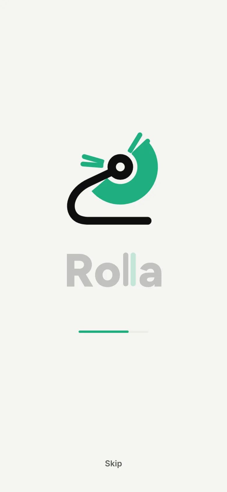
The Rolodex loads the app
Loose cards flick out of the wheel one after another, the wordmark's second "l" swipes into place and a bar fills. It plays every time, and tapping the wordmark plays it again.
Portfolio project · App and brand
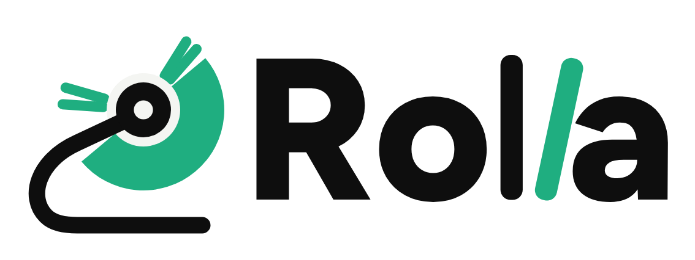
Swipe into work.A jobs app that makes applying quick but deliberate, with a network built around people and their work instead of posts. This is why I made it and how it works, down to the small details.
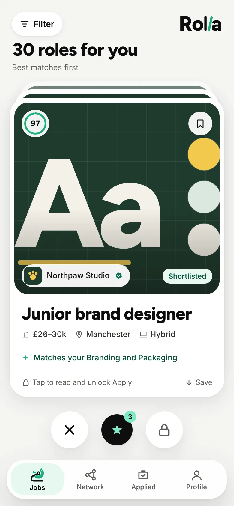
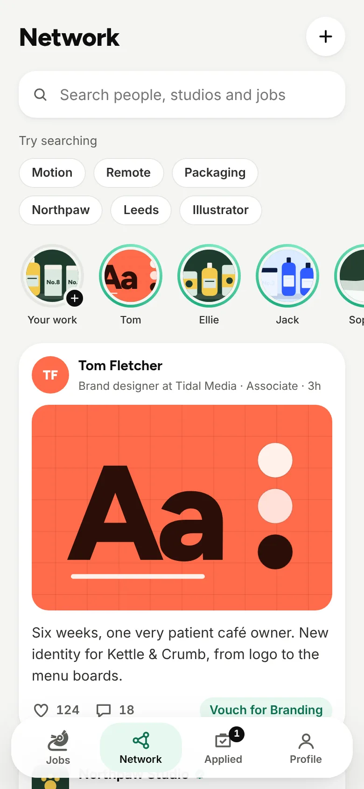
“Applying for jobs is boring and tedious, and it can be done so much better.”
Applying for jobs is the same form, the same upload and the same silence, over and over. You spend an evening on an application and never find out if anyone opened it. Dating apps worked out years ago how to make browsing feel light and quick, and I wanted to see what that would look like for finding work.
The other half is LinkedIn. It was meant to connect people, but I think it's lost its way. It's become a glorified corporate meme machine: humblebrags, engagement bait and posts written for an algorithm instead of for anyone you'd actually work with. It could be so much better.
So Rolla is two things in one. A deck of jobs you swipe through, made so every application still means something, and a network that's about people and the work they make, like Instagram for your career.
One role at a time, with your match score and the skills it matches. Swipe up to apply, down to save.
Apply stays locked until you've read the whole listing, so every application is deliberate.
Three a week. A short message that puts you at the top of the employer's list.
Ethos, recent work, the team and open roles. Shortlist a studio and its jobs come first.
Stories, showcase posts and milestones from people and studios, with vouching instead of endorsements.
Every application with a status timeline, from Sent to Interview, so you're never left wondering.
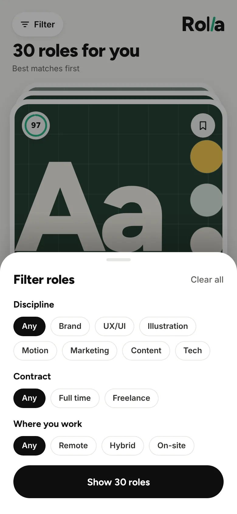
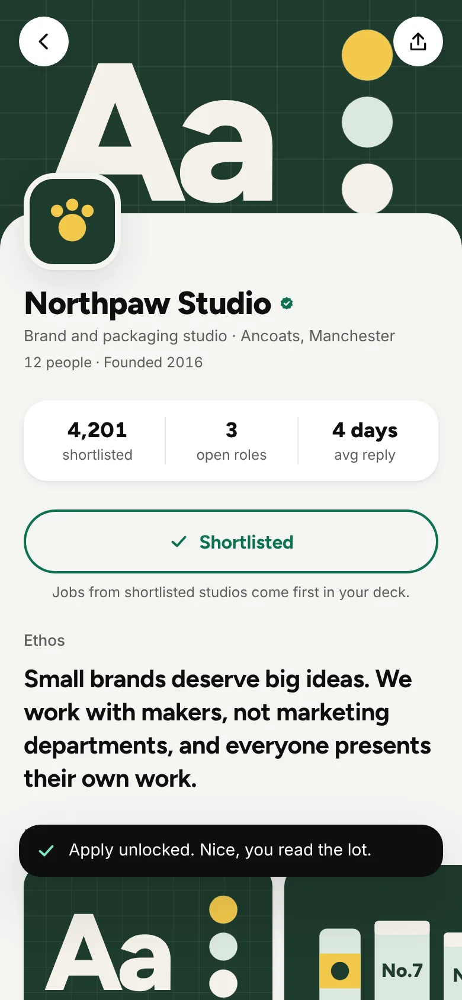
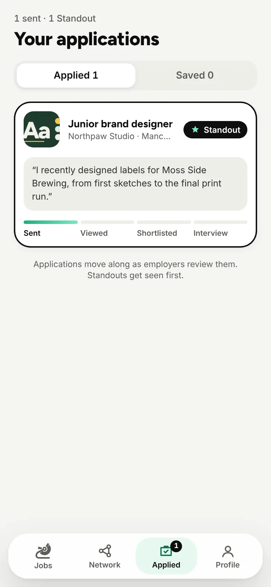
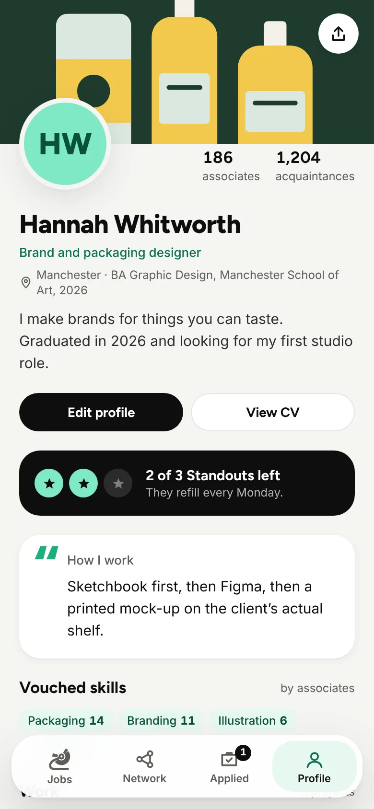
Live preview
This is the real prototype, running live. Read a listing to unlock Apply, send a Standout, open a studio or have a look round the network. On a computer, drag the cards and scroll inside the phone.
Swiping is quick and it's fun, but left and right comes with a lot of baggage. A job isn't a face, and I didn't want people flicking past roles without a thought. So Rolla swipes up and down instead, and the cards roll over a wheel like a Rolodex: up and over the top to apply, down and under to save.
Passing on a job is a deliberate tap on the ✕ rather than a flick, and both saves and passes can be undone. With a keyboard, the arrow keys do the same.
Over the top of the wheel, once you've read the listing.
Under the wheel and into Saved, for later.
A deliberate button, never an accidental flick. And you can undo it.
Make applying too easy and you get the opposite problem: people spraying applications at everything, and employers drowning in them. Rolla's answer is simple. Apply stays locked until you've scrolled to the end of the listing.
The Apply button fills with mint as you read, and when you reach the bottom it unlocks with a little "Nice, you read the lot." Until then, the card on the deck resists being swiped up. It costs you a minute, and it means every application an employer gets is from someone who knows what the job is.
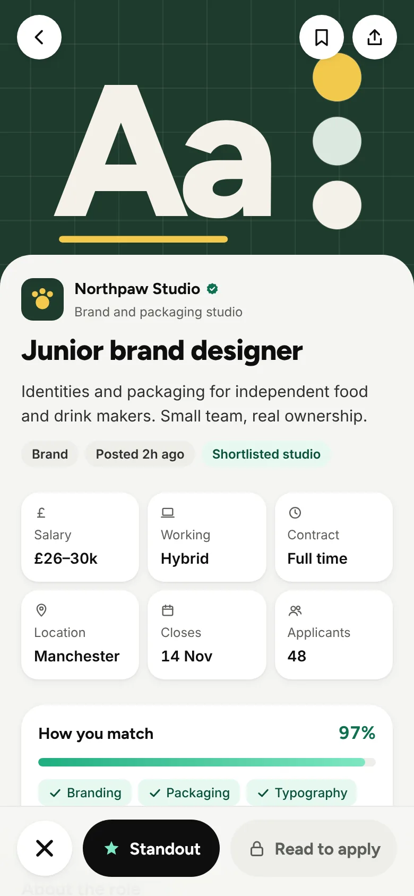
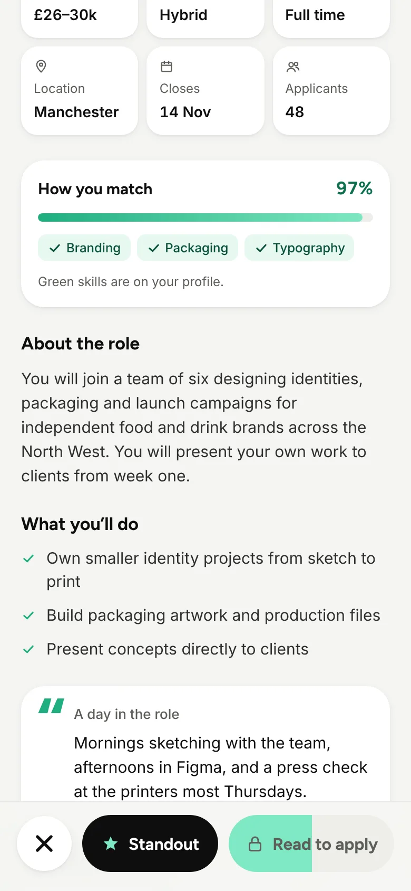
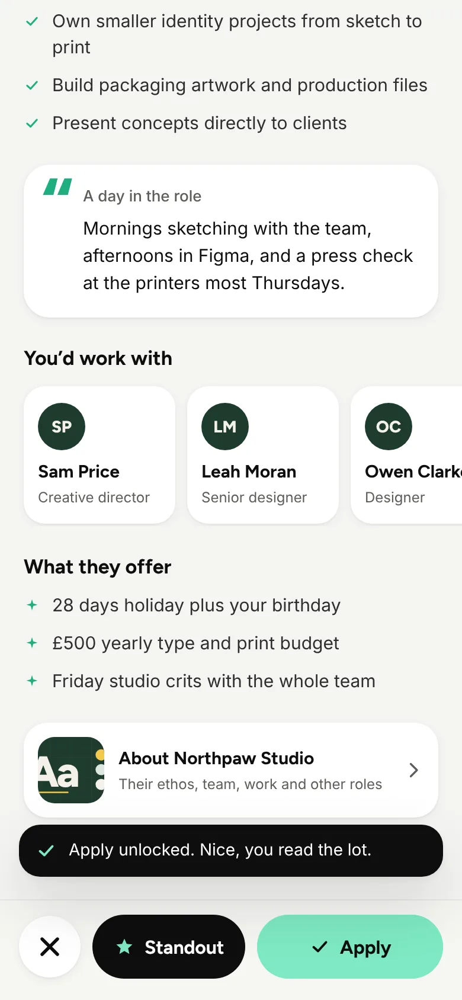
A super like for jobs. You get three a week, and each one needs a short message, a few lines on why you. A Standout skips the queue: it's pinned to the top of the employer's list with your note going straight to the person hiring.
Keeping them scarce is what makes them mean something, both to you and to the person reading them. They refill every Monday. In the brand, a Standout is always ink with a mint star, so you spot one straight away.
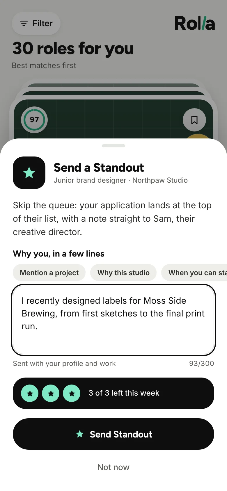
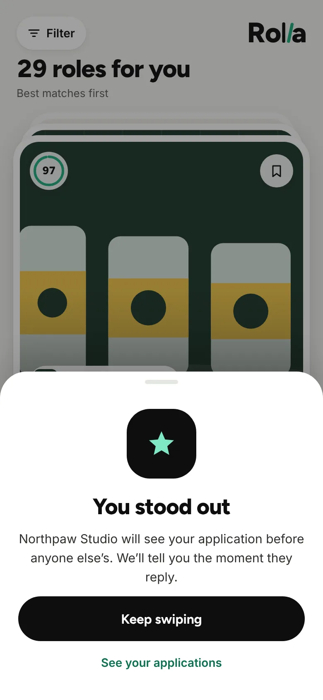
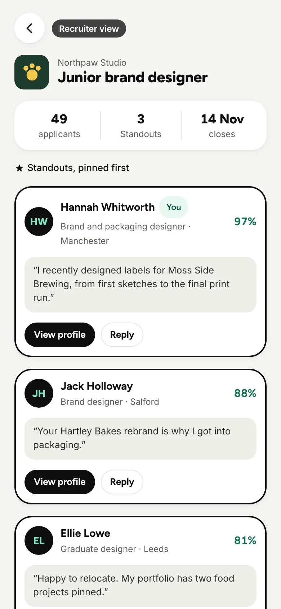
This is my answer to LinkedIn. The feed is work: showcase posts, milestones and studio news, with stories you swipe through like Instagram. Profiles lead with what you've made and how you work, not a list of buzzwords. Skills are vouched for by the people who've actually worked with you, instead of one-click endorsements from strangers.
I gave the connections their own words too, because "connection" stopped meaning anything a long time ago.
| Term | What it means |
|---|---|
| Acquaintance | Someone who follows you. One way. |
| Associates | You follow each other. That unlocks messaging and vouching. |
| Shortlist | Following a studio. Its jobs move to the front of your deck. |
| Standout | A super like with a message. Three a week. |
Rolla is named after a Rolodex, the spinning card file that sat on every desk and held everyone you knew in work. It's a network and a deck of cards at the same time, which is exactly what the app is.
The logo is a side-on Rolodex: a solid mint fan of cards on a curved ink stand, with a few loose cards flicking out. In the wordmark, the second "l" is a swiped card, tipped and in mint. I wanted it light and calm rather than dark, so it's built on off-white, ink and one confident mint.
Swipe into work.
Headings, buttons and the wordmark.
Read the listing to unlock Apply.
Body text, labels and captions.
The bits you'd only notice by using it.

Loose cards flick out of the wheel one after another, the wordmark's second "l" swipes into place and a bar fills. It plays every time, and tapping the wordmark plays it again.
The Jobs tab is a tiny Rolodex. Hover over it or tap it and its cards flick, like the logo.
All 30 roles come from 12 made-up studios, each with its own colours. Every cover, logo and piece of "recent work" is drawn in code from that palette, so the whole prototype runs without a single image file.
Send one and its timeline moves along on its own over a few minutes: Sent, Viewed, Shortlisted, Interview. It shows the honest feedback that real job sites never give you.
From your profile you can flip into the recruiter's view of the role you applied for, with your application among the others and Standouts pinned at the top. It's there to show what a Standout actually buys you.
Rolla is a clickable prototype, not a live service, written in plain HTML, CSS and JavaScript with no framework and no build step. On a computer it sits in a phone frame; on a phone it fills the screen. Your progress is saved in your browser, and "Reset demo" on the Profile tab starts it fresh.
| Real | Simulated |
|---|---|
| The whole interface: swiping, the Rolodex roll, read-to-unlock and every screen | The 30 roles, 12 studios and all the people, which are made up |
| Saving, passing, undo, filters and match scores | Employers reviewing your application: the timeline moves on a timer |
| Standouts, their weekly limit and the recruiter view | Messaging, posting and sharing |
| Your progress, saved in the browser | Accounts and sign-in |